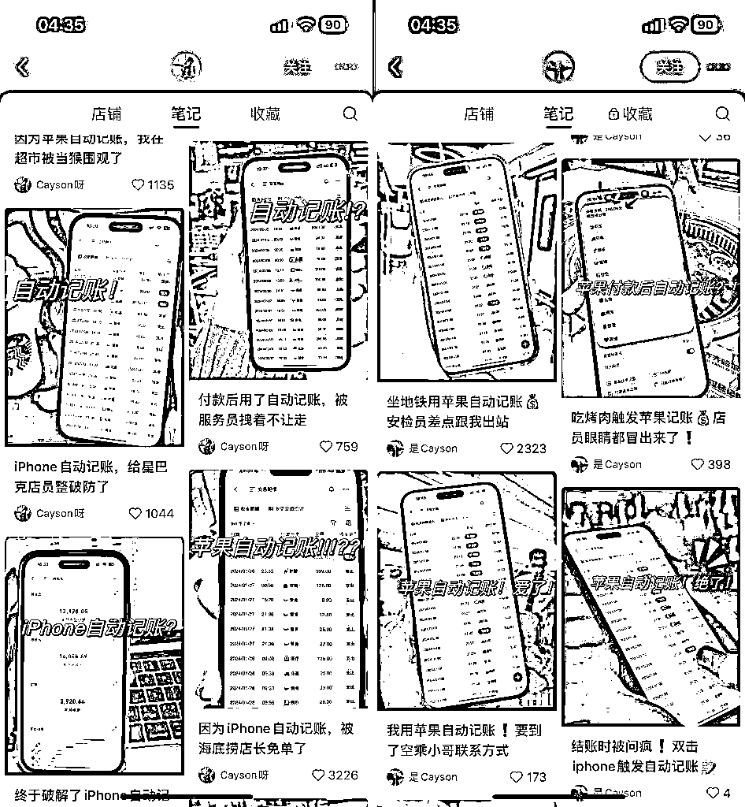

来源：https://uq17tj7uobh.feishu.cn/docx/EQvPdcvLboSnqXxknJmczBHjnCe
大家好，我是Gemin-巅峰，因为i人性格这两年基本处于“闭关锁国”状态，加上受这两年的初次创业失败的经历导致自信受挫，加上认知有限导致很少或者说不太敢和大家链接交流，实际上我是非常渴望能与各位交接链接的。经过23年一整年的沉淀和反思，也是时候该打破这个瓶颈，有必要跟大家做一个自我介绍。
我，标准的00后，目前定位是互联网创业人（目前自由职业人）➕互联网技术开发团队（三俩个常常交流的技术搭档）。18年中专辍学进入社会大学，当时在一家美业公司从事网络营销的职务，主要负责搜索引擎SEO、SEM以及自媒体文案输出。
19年开始在互联网上尝试各类小项目，19年底入局外卖CPS项目，在这里我要感谢一个带我入门的老大哥【锐葳】以及当时乃至现在一直提供技术支持的【土旦】技术团队，今天要讲的快捷指令的开发也是由【土旦】团队负责的，也就是我上面所提到的互联网技术开发团队。
20-21年通过外卖CPS项目赚到了人生第一个百万，21年年底辞去人生中第一份工作，走上自主创业的道路，22年重仓付费流量投放做淘客私域社群，但好景不长，因项目经验不足及资金规划的失误导致亏损，截至目前也才回本了30%-40%左右，22年年底遣散了公司团队回归本我。
23年决定以轻投入为主，在小红书寻找突破口，尝试过薯条、聚光等付费产粉卖粉（猫车、外卖粉为主），同时也自己接一点粉当作理财，618天猫超红通过薯条付费投流的方式2w撬动8w佣金，同样的方式双11京东超红5k撬动3w佣金，23年一整年浑浑噩噩的大概挣了二十来万，23年一整年大部分时间是处于无事可做、自我反省的状态，极度渴望提升认知，渴望链接交流！
欢迎每一位朋友一起交流学习，闲话也说的够多的，马上进入正题！
大概在1月13号，当时我的技术搭档在星球里无意刷到了关于记账快捷指令的风向标，他当时觉得这个东西开发相对来说也比较简单，符合自己的一个项目需求，然后第一时间就截图分享给我了，简单的聊了一下实现原理！
思考了一下，我觉得这个东西可行！！信息差和认知真的太重要了，如果不是有人分享出来，我根本无法想象这个东西还有这种玩法！
我个人认为，一个好的项目在你没有行动之前不需要做太多的分析，分析千遍不如实操一遍。简单的评估一下这个项目是否符合目前阶段的自己，有哪些投入与风险，以最差的情况为基础，判断一下自己是否能承担这个损失（在我创业失败之前是没有这一条的），然后干就完事了！
在和搭档聊完后，我第一时间打开小红书开始分析市场，通过一下2个维度进行简单的市场需求分析：
时间维度：筛选近期发布的笔记，简单评估一下近期新笔记的状态
互动指数：观察近期笔记的互动量，分析一下用户需求量及热度
当时我发现近期笔记数量不算太多，相关对标账号不超过10个。但是，每篇笔记下面几乎都有互动评论，互动量还不小，看得出来当时在小红书平台上市场还处于“求大于需”的状态。
想想确实是，这个产品实实在在的是解决了一部分人的需求，以往记账都是消费后需要用户打开APP然后再进行记账操作，如果没有养成习惯一般时不时的都会忘掉，到了晚上想起来今天还没记账，开始打开账单再打开记账APP来回切换进行记账行为，操作过于繁琐。
这个产品出世之后，用户消费完只需要通过双击手机背面或者其他快捷触发的方式触发记账指令，就可以进行记账操作，减少用户不断重复的交互行为，大大提升了记账的效率！
在简单的分析了一下市场之后，就要开始分析市场竞争了，在小红书商品栏目里通过关键词搜索“记账快捷指令”，分析店铺数量、商品数量、商品销量等等.....当时商品数量非常的少，占据Top1的是Cayson大佬，销量Top1相对于Top2属于断层式领先。
我记得当时Top1的销量是3k＋，达到500单的也没两家，基本都是几十单、百来单的情况。我分析了他们的笔记质量，除了Cayson笔记质量稍高之外，其他同行的笔记一般，且大部分是模仿Cayson的创意，模仿的也不太到位，但互动数据并不差，这个时候我就知道，我的机会来了！
13号下午分析了市场之后说干就干，在这之前大脑里构建了项目的整个框架，当时的想法就是自然流+聚光投流的打法，尽可能加快抢占市场流量的进度，在这之前我是第一个投放聚光的账号，在互联网上混迹的这几年里，我深知时间对项目会有多大的影响。
这么好的蓝海项目，在没有绝对把握能出爆款笔记之前，付费投流是最简单的抢占市场的方法！只要你够快，就能吃到螃蟹，闭着眼睛都能捡钱。同时预估了一下硬性资金要求：账号认证费用600、店铺押金1000/10000、自动发货软件几十块、聚光开户首充2000，2000多试水，哪怕失败了也就2000多块钱的事！干！
产品开发：我们买了一份同行的产品，发现账本里面的算法公式混乱，指令里的逻辑也比较混乱，技术那边开始重新梳理，基本上重新写了一遍指令！同时优化了记账模板里的混乱公式，当天晚上1.0版本就出来了，简单的进行测试了一下基本没有问题，至此产品供应问题解决。
其实并不是我一个人在战斗，产品的开发与维护以及部分技术售后都是由我的这位开发搭档负责，为这次的项目奠定了扎实的基础！
教程录制：我们参考了同行的教程文档，初版教程几乎全部都是图文教程，在这个基础上我录制了视频教程与图文教程并存！后面发现，消费者看到冗长的教程文档进行操作，很多人粗心大意不仔细看教程，会遇到非常多的问题，导致售后问题不断！这算是一个坑吧，我们在准备教程的时候，不是描述的越详细越好，而是让用户看起来觉得越简单越好，减少对用户的文案输出！后面的教程中我们砍掉了所有图文教程，只保留视频教程，果然售后问题少了很多。
商品素材：包括商品主图、详情图，用稿定设计进行制作，找了很久的模板没有合适的，好在自己有一些排版设计功底，确定了一个模板背景，然后更具自己的需求重新进行排版设计。吃了没有团队的亏，什么事都得靠自己！至此，产品建设完成。
账号认证：作为一个新号，想要最快程度提高账号权重，无法就是提高这个账号的活跃度、真实度，参考对标账号完善一下账号人设信息，然后付费认证蓝V（认证费：600），告诉平台我是来入驻做生意的，不是来随便转转发发广告的，另外一方面就是投放聚光必须要有蓝V认证。我是13号晚上申请认证的，14号上午就过审了，现在的认证速度一般2天内搞定。
店铺入驻：账号认证之后就是开店铺了，这里有一个坑当时我没注意，如果你的资金紧张，那就用个体户认证账号，如果用公司主体认证账号，那么你的店铺类目押金*10，我这里选择的类目是【3C数码 > 3C数码家电服务 > 软件服务】由于我是公司资质认证，保证金缴了10000！！然后莫名其妙还有个70块的保证金的手续费......如果你是个体户那么店铺押金只要1000
小红书千帆商家后台：https://ark.xiaohongshu.com/
商品发布：店铺入驻审核通过后即可发布商品，成功发布之后设置一下自动发货即可，我用的是阿奇所自动发货平台。在发布商品之前务必确认好商品的SKU设置，是否要开启多个SKU，否者发布上架之后必须要下架产品才能修改，如果这个时候你正处于流量上升期，同时聚光消耗也可观的情况下，随意修改下架商品会导致原商品失效，浪费掉不少流量。我就是当时没注意，导致广告停了一下午。
群聊创建：因为普通笔记没有转化入口，所以我们需要建群来承接普通笔记的流量，在群内进行营销转化。群里置顶一条引导消息，然后发布群内购商品！
聚光开户：聚光开户挺简单的，首先登陆聚光后台，往里面充2000块钱即可解锁广告投放功能，然后在【工具】-【账户工具】-【推广资质认证】里添加一个投放资质即可！我选的是【商务服务-商务服务-其他】，资质审核通过后即可创建计划投放广告。当然，你也可以找代理商开户，可以谈返点问题~
小红书聚光平台：https://ad.xiaohongshu.com/
笔记质量是决定你能否出单的关键，其实笔记的创作非常的简单，同行是最好的老师，如果你自己没有头绪，那么模仿同行是最好的选择，注意是模仿不是搬运！我个人认为被模仿是一件特别有成就感的事，如果有人开始模仿你了，说明你已经成为行业标杆了，所以我的账号从始至终都没怎么拉黑过同行，只要不是直接搬运，哪怕你素材的拍摄角度、风格和我一模一样我都觉得你有本事，看到也会默默的点个赞。
图片：前期可以模仿同行为主，一般都是手持手机打开记账模板或者触发指令之后的页面，要模仿就模仿到位，包括手持手机的角度、位置，背景的光线等等，越接近越好。
标题：标题和图片是点击率的关键，所以一个好的标题能让你够事半功倍，你可以模仿同行标题，也不一定是同行的，同时也可以参考其他行业的爆款笔记进行魔改
文案：文案直接通过Ai创作，我用的是讯飞星火里的笔记种草模型，或者参考同行的文案内容，稍微伪原创即可！
评论：做评论的原因主要有两个，第一是引导用户互动，提高笔记数据指数从而进入更大的流量池，小红书的具体推荐机制我就不详说了，很多大佬都有分享过。第二就是引导用户转化，比如引导加群，群内转化。
账号冷启动期间一天可以发个2-3篇笔记，当笔记积累到一定数量之后就上聚光跑量，后期一天1-2篇笔记就差不多了，笔记不要一味的求量，要以提升质量为主！
小红书的商品和传统电商不同，不需要刷单来提升排名，毕竟流量不是以商品搜索为主，更多的是搜索笔记种草，通过博主种草下单！虽然不需要刷单，但还是有必要打造一下商品的形象，比如做一些图文评价、晒单笔记这些！
客户运营是整个项目运作过程中最耗时耗精力的事情，如果你像我一样一个人，那么你既要管理群消息，又要负责私信的咨询回复，同时也要兼顾售前/售后的客服工作！
群运营：为了促进转化，一般我们会在群里发布群内购商品，会比店铺正常价格便宜2块钱，然后时不时的在群里发一下内购卡片和引导下单文案即可。
私信回复：因为聚光投流的转化目标是私信开口，所以会有很多的私信咨询，一般私信回复内容为商品卡片+引导转化文案和群聊差不多，如果你手动回复，那肯定是回复不过来的，这个时候这种重复性的工作为了减轻我们的工作量，可以把这项工作交给脚本，写一个自动回复的脚本，我用的是自动精灵~
售前/售后回复：这个是没办法交给脚本来完成的，因为会遇到形形色色的客户以及千奇百怪的问题，必须人工回复，我80%的时间都在回复处理售前/售后工作！那些要退款的、完全小白且没有耐心看教程的客户，直接给他们退款，不要浪费时间在他们身上，不但浪费时间还影响心情。
关于聚光的投放，我建议普通笔记投放目标以私信开口为主，全站智投！私信开口的点击成本相对较低一些。
前期笔记少的情况下我的策略是每次更新2篇笔记之后都会新起一个计划，比如第一天发布了2篇笔记，那么聚光就给这两条笔记起一条计划。第二天又更新了2篇笔记，那么给第一天+第二天一共4篇笔记新起一遍计划，以此类推！可以看到下图，之前起来非常多的计划！
当你的笔记素材差不多达到10篇左右了，这个时候我们观察之前起的计划数据，把没有消耗、效果比较差的计划全部停掉，只保留1-2条效果好的计划，这个时候一般计划模型已经跑稳定了，如果不停其他计划会造成一个自我竞争的负面效果，以后更新就往你保留的计划里面塞新笔记素材就行。
我保留了2条效果相对理想的计划一直到现在都没有动过，每次更新笔记就往里面塞创意，同时我新起了2条计划专门用来跑视频，如果你的拍摄功底不好，我不建议你发视频笔记，因为剪辑拍摄很耗时效果还不如图文笔记，我也就前期更新了几条视频笔记，后面就再也没有更新过视频笔记。
汇总了一下数据，除去退款金额整体ROI=5.9，对比那些高客单的产品，这个结果虽然不算特别优秀，但也算不差了！
我一开始的想法很简单，单纯的就是想通过普通笔记配合聚光尽可能的拉低与Top1的流量差距，回看一下这45天的数据走势，我的打法确实也没错！
但是，有一点超乎了我的预料，当时我没重视的商品笔记原来才是爆单的关键！之前为了测聚光的电商目标我的第二篇笔记就是商品笔记，但是数据一直不太好，聚光点击成本也高，所以后面一直没有重视商品笔记。
直到2月8号我抱着试一试的态度再次发布了一篇商品笔记，当时没怎么注意，直到13号我突然发现这个商品笔记的流量一直在上升当时我也没有投流，然后看了一下出单占比，通过商品笔记出单的数据居然在持续上升，以往笔记出单几乎是个位数甚至没有，单量随着笔记热度持续上涨，13号开始彻底爆发！
19号达到的顶峰，商品笔记在没有投流的情况下出单占比居然高达60%，当天ROI直接拉高到10！
从那以后商品笔记被我重视了起来，但是因为过于重视而犯了一个错误！后续的笔记基本都是商品笔记，普通笔记的更新非常的少，导致那段时间聚光消耗没有跟上节奏，因为没上新创意，随着爆款商品笔记的热度下降，单量也随之下降！其实那时候正确打法是在我原有的基础打法上加上商品笔记的打法，而不是过于重视商品笔记而忽略了原来的计划！
最后总结一下我这45天的主要流量来源：
1.普通笔记自然流量
2.聚光付费流量
3.商品笔记流量（转化率高）
4.官方流量扶持
重点说一下官方流量扶持：主要来源与群聊运营奖励、店铺成长任务、参与官方营销活动。该说不说，官方给的流量扶持还是挺多的，但是如果基础数据差，那么比较难达到这些奖励的门槛。但如果持续优化笔记再配合聚光，不断提升自己的基础数据，形成一个良性闭环，那么很轻松就能获得官方的这些流量扶持！
我为什么一开始的打法就以聚光投流为主，其实除了前面我所说到的加快抢占市场流量原因之外。还有一个原因：我不太能确定自己的自然流能够干上去，或者说短时间没把握出爆款自然流笔记。如果单纯想靠自然流拉低和Top1的差距，除非你的素材质量特别过硬，或者你走了大运，突然一遍商品笔记大爆！
说出来你可能不信，现在的Top2就是因为这个原因突然爆单，在这之前他一直停留在500单左右，当时我的销量从0开始稳步上升的超越过他......直到他的一遍商品笔记大爆，至今我都没分析出这篇笔记到底好在哪里，有经验的大佬们可以去分析一下......
如果我不上聚光，我就会走Top1 Cayson的那条路线，以个人生活为主题创作场景笔记打自然流！但是作为一个新号为了快速稳妥的实现目标，我还是选择了聚光！

选择聚光就会有一个问题，笔记将无法走个人生活场景笔记的风格，投过聚光的人都知道，笔记标题、文案不能以个人体验、经历为主题，广告审核会打回，同时笔记也会标为违规！
所以除了前期模仿了他一些笔记之外，后面几乎没有模仿他的创作风格，但偶尔如果看到有个人主题不强烈的标题我会借鉴一下。
另外再提一句，抖音、快手、知乎等这些大平台目前仍然是蓝海期，奈何我经验不足，有经验的大佬们可以一试。
好了，今天的分享就到这了，希望对大家有所帮助，同时也希望大家多多指教、交流。因为鄙人的文采有限，可能很多的细节没有表达出来，如果大佬们有需要，后面再做分享~